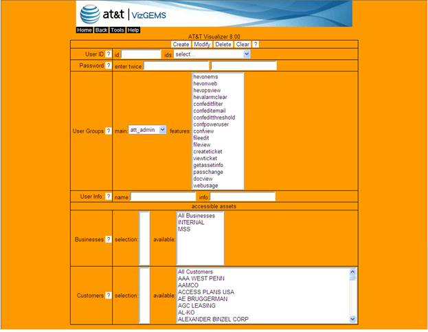

The Account Manager tool, shown in the following figure, allows you to create and manage user accounts for Visualizer system access. This tool is to be used by the Visualizer account administrator.

Figure 10-6 Account Manager
Create – gathers the data entered, and creates a new user account.
Modify – saves any changes made based on the existing user account.
Delete – deletes the existing user account.
Clear – removes all content.
? – provides online details about the functionality of buttons.
Create a new user id by entering an id of your choice; or select from the ‘ids’ list to modify an existing one. The ‘ids’ lists will provide all existing user IDs in Visualizer.
Used to set the initial password for the user ID; or change the password for an existing user account.
Each user must be assigned to an account group. A list of user account types is available through the ‘main’ drop down list. For example, typically an ATT Internal Account should be: att_user.
Figure 10-7 Account Group
Each account type has a list of features associated with it. The administrator determines which features of the selected user account type are assigned to the newly created user. Press and hold the Ctrl button and mouse click the values desired. All features will be assigned by default.
The User (at a minimum) should have the following permissions: hevonweb.
Depending on users’ role, they can also be assigned as the following:
Table 10-1 View Inventory File Key Fields
|
Permission (recommended group) |
Description |
|
hevopsview (Operations) |
visibility into the Viz |
|
hevalarmclear (Operations) |
ability to clear alarms from the view |
|
confeditfilter (Operations) |
ability to configure the blackout tool |
|
confeditemail (Operations) |
ability to configure email settings |
|
confeditthreshold (Operations/TAM) |
ability to tune Visualizer thresholds |
|
confview (Any) |
visibility into the blackout entries |
|
fileedit (Operations, Provisioning) |
ability to configure file manager |
|
fileview (Any) |
visibility into the file manager entries |
|
createticket (Operations) |
ability to create/append AOTS ticket entry |
|
viewticket (Any) |
visibility into latest ticket info |
|
getassetinfo (Any) |
visibility into asset’s management profile |
|
passchange (None) |
ability to change password (reserved for admin) |
|
docview (Any) |
access to documentation link |
|
webusage (Any) |
visibility to Usage stats |
This field records basic information about users, e.g., name (e.g., the User’s full name) and description (typically the User’s Org).
The administrator can limit access to businesses for each user. All available businesses are displayed for the administrator in a drop-down list. Click on the available list to add specific businesses to the user’s account access. For example, cg4430_att was allowed to access all businesses and all customers, but cg4430_xxx was only allowed access to the hosting business and the xxx customer. Click on selected businesses to remove the selection.
Customer access can also be limited by the administrator for each user. All available customers are displayed for the administrator to select from in a drop-down list. Click on the available list to add specific customers to the user’s account access, and click on selected customers to remove the selection.